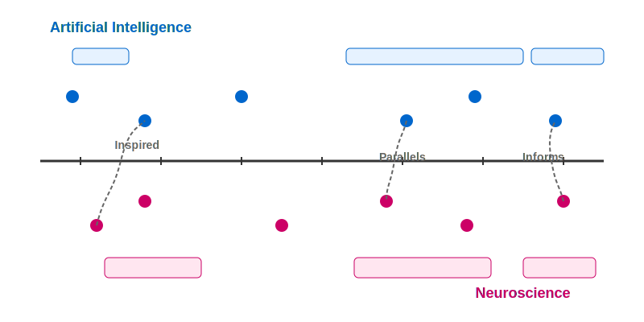
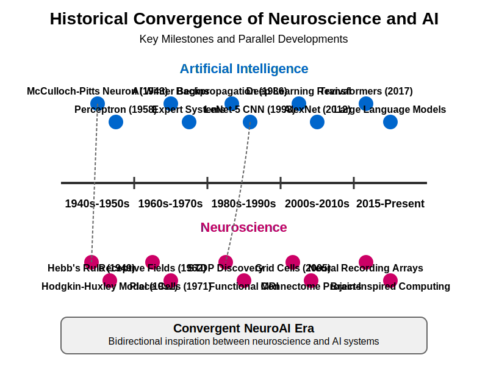
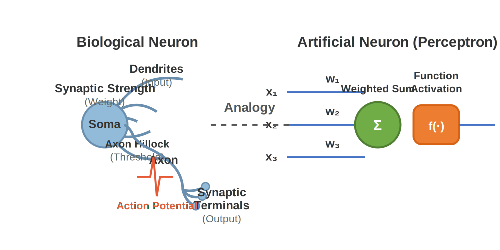

Chapter 1: Introduction to Neuroscience ↔ AI#
Learning Objectives
By the end of this chapter, you will be able to:
Trace the historical development of neuroscience and AI as interconnected fields
Identify key parallels between biological neural systems and artificial neural networks
Explain how biological principles have inspired major AI advances
Describe how modern AI tools contribute to neuroscience research
Implement basic simulations demonstrating bio-inspired computational principles
1.1 Historical Context#
The relationship between neuroscience and artificial intelligence is deeply intertwined, with each field influencing the other across decades of research. Understanding this history helps frame modern developments in both disciplines.
 Figure 1.1: Historical timeline showing the parallel development of neuroscience and AI, with key moments of cross-fertilization.
 Figure 1.2: Key milestones in the parallel development of neuroscience and artificial intelligence, showing how the fields have converged over time.
 Figure 1.3: Comparison between a biological neuron and an artificial perceptron, showing structural and functional parallels.
1.1.1 Early Foundations#
The foundational ideas that would become AI emerged from attempts to understand and model how the brain processes information:
Cybernetics (1940s-1950s) established the concept of feedback control systems, inspired by how biological organisms maintain homeostasis. Norbert Wiener defined cybernetics as “the scientific study of control and communication in the animal and the machine,” highlighting the cross-disciplinary approach.
import numpy as np
import matplotlib.pyplot as plt
def simple_feedback_system(target, initial_state, gain=0.1, noise_level=0.05, steps=100):
"""Simulate a simple feedback control system with noise."""
state = initial_state
states = [state]
for _ in range(steps):
# Measure error (difference between current state and target)
error = target - state
# Apply correction based on error and gain factor
correction = gain * error
# Add some noise to simulate real-world conditions
noise = np.random.normal(0, noise_level)
# Update state
state = state + correction + noise
states.append(state)
return np.array(states)
# Example: Simulate homeostatic control (like body temperature regulation)
target_value = 37.0 # Target temperature (e.g., human body temperature)
initial_value = 36.0 # Starting below target
# Compare different gain factors
gains = [0.05, 0.2, 0.5]
plt.figure(figsize=(10, 6))
for gain in gains:
states = simple_feedback_system(target_value, initial_value, gain=gain)
plt.plot(states, label=f'Gain = {gain}')
plt.axhline(y=target_value, color='r', linestyle='--', label='Target')
plt.xlabel('Time Steps')
plt.ylabel('System State')
plt.title('Feedback Control System (Cybernetic Principle)')
plt.legend()
plt.grid(True)
# plt.show() # Uncomment to display the plot
McCulloch & Pitts Neurons (1943) provided the first mathematical model of a neuron, showing how simple logical operations could be performed by binary threshold units. This model represented neurons as boolean logic gates that fire when their inputs exceed a threshold—a framework that remains influential today.
def mcculloch_pitts_neuron(inputs, weights, threshold):
"""
Implementation of a McCulloch-Pitts neuron.
Args:
inputs: Binary input values (0 or 1)
weights: Connection weights (typically 1 or -1 for excitatory/inhibitory)
threshold: Activation threshold
Returns:
1 if weighted sum of inputs meets/exceeds threshold, 0 otherwise
"""
weighted_sum = sum(i * w for i, w in zip(inputs, weights))
return 1 if weighted_sum >= threshold else 0
# Example: Implement logical operations with McCulloch-Pitts neurons
def logical_AND(x1, x2):
return mcculloch_pitts_neuron([x1, x2], [1, 1], 2)
def logical_OR(x1, x2):
return mcculloch_pitts_neuron([x1, x2], [1, 1], 1)
def logical_NOT(x):
return mcculloch_pitts_neuron([x], [-1], 0)
# Test the logical operations
print("McCulloch-Pitts Neuron Implementation:")
print("AND(0,0) =", logical_AND(0, 0)) # Expected: 0
print("AND(1,0) =", logical_AND(1, 0)) # Expected: 0
print("AND(0,1) =", logical_AND(0, 1)) # Expected: 0
print("AND(1,1) =", logical_AND(1, 1)) # Expected: 1
print("OR(0,0) =", logical_OR(0, 0)) # Expected: 0
print("OR(1,0) =", logical_OR(1, 0)) # Expected: 1
print("NOT(0) =", logical_NOT(0)) # Expected: 1
print("NOT(1) =", logical_NOT(1)) # Expected: 0
Von Neumann Architecture (1945) established the foundational computing paradigm that separates memory and processing—quite different from the brain’s integrated approach. Despite this architectural divergence, von Neumann drew inspiration from neuroscience, writing about neural networks and brain-like computing in his unfinished work “The Computer and the Brain” (1958).
1.1.2 Neural Networks: First Wave#
The late 1950s and 1960s brought significant developments in neural network research, directly inspired by biological principles:
The Perceptron (1957) was developed by Frank Rosenblatt as the first trainable neural network model. Unlike the static McCulloch-Pitts neuron, the perceptron featured an adaptive learning algorithm that modified connection weights based on errors—mirroring aspects of neural plasticity.
class Perceptron:
def __init__(self, n_inputs, learning_rate=0.1):
"""
Simple perceptron implementation.
Args:
n_inputs: Number of input features
learning_rate: Learning rate for weight updates
"""
# Initialize weights with small random values (including bias)
self.weights = np.random.randn(n_inputs + 1) * 0.1
self.learning_rate = learning_rate
def predict(self, inputs):
"""Make a prediction for the given inputs."""
# Add bias input
inputs_with_bias = np.append(inputs, 1)
# Calculate weighted sum
weighted_sum = np.dot(inputs_with_bias, self.weights)
# Apply step activation function
return 1 if weighted_sum >= 0 else 0
def train(self, training_inputs, labels, epochs=100):
"""Train the perceptron on the given data."""
for _ in range(epochs):
total_error = 0
for inputs, label in zip(training_inputs, labels):
# Make prediction
prediction = self.predict(inputs)
# Calculate error
error = label - prediction
total_error += abs(error)
if error != 0:
# Update weights (including bias)
inputs_with_bias = np.append(inputs, 1)
self.weights += self.learning_rate * error * inputs_with_bias
# If no errors, we've converged
if total_error == 0:
break
# Example: Train a perceptron to learn the AND function
X = np.array([[0, 0], [0, 1], [1, 0], [1, 1]])
y = np.array([0, 0, 0, 1]) # AND function
perceptron = Perceptron(n_inputs=2)
perceptron.train(X, y)
print("\nPerceptron Implementation for AND Function:")
for inputs in X:
prediction = perceptron.predict(inputs)
print(f"Inputs: {inputs}, Prediction: {prediction}")
Limitations and AI Winter (1969-1980s): Marvin Minsky and Seymour Papert’s book “Perceptrons” (1969) highlighted the inability of single-layer perceptrons to learn non-linearly separable functions like XOR. This critique, combined with computational limitations of the era, led to the first “AI winter”—a period of reduced funding and interest in neural network research.
1.1.3 Revival and Modern Neural Networks#
Interest in neural networks resurged in the 1980s and 1990s, driven by several key developments:
Backpropagation Algorithm (1986) by Rumelhart, Hinton, and Williams solved the training problem for multi-layer networks, enabling them to learn complex, non-linear patterns. Though the algorithm itself doesn’t directly model biological learning processes, it shares conceptual similarities with error-driven learning in the brain.
Deep Learning Renaissance (2006-present) began with breakthroughs in unsupervised pre-training for deep networks by Hinton, Bengio, and others. The increasing availability of computational resources and large datasets has enabled neural networks of unprecedented scale and capability, including models with billions of parameters.
Today, neuroscience and AI maintain a productive bidirectional relationship:
Deep learning models inform hypotheses about brain function
Neuroscience insights continue to inspire architectural innovations in AI
Tools from both fields are increasingly used to explore the other
1.2 Levels of Analysis#
To bridge neuroscience and AI effectively, we need conceptual frameworks that span both disciplines. David Marr’s influential three-level approach provides an elegant structure for this comparison.
1.2.1 Marr’s Three Levels#
David Marr (1982) proposed analyzing information processing systems at three distinct levels:
Computational Level: What is the system trying to accomplish and why?
The goals, functions, and abstract problems being solved
Example: Object recognition, prediction, decision-making
Algorithmic Level: What specific representations and procedures implement the computation?
The information formats and processing approaches
Example: Hierarchical feature extraction, error backpropagation
Implementational Level: How are the algorithms physically realized?
The physical substrate and mechanisms
Example: Neurons and synapses vs. silicon transistors
def marrs_levels_example():
"""Illustrate Marr's three levels for object recognition."""
marrs_levels = {
"computational": {
"brain": "Identify objects regardless of viewpoint, lighting, and context",
"ai": "Classify images into predefined categories with high accuracy"
},
"algorithmic": {
"brain": "Hierarchical processing from simple features (edges) to complex patterns (shapes) to object identities",
"ai": "Convolutional neural network with feature extraction, pooling, and classification layers"
},
"implementational": {
"brain": "Neurons connected by synapses, organized in specialized regions (V1→V2→V4→IT)",
"ai": "Matrix multiplications and non-linear activations implemented on GPU hardware"
}
}
return marrs_levels
# Display the comparison of Marr's levels between brain and AI systems
marrs_comparison = marrs_levels_example()
for level, systems in marrs_comparison.items():
print(f"--- {level.upper()} LEVEL ---")
print(f"Brain: {systems['brain']}")
print(f"AI: {systems['ai']}")
print()
This framework helps us identify where brain-inspired AI systems truly parallel biological processing versus where they diverge. Often, modern AI systems implement similar computational and algorithmic principles to the brain but through radically different implementations.
1.2.2 From Neurons to Networks to Behavior#
Neuroscience operates across multiple scales of analysis, each with parallels in artificial systems:
Level |
Neuroscience |
Artificial Intelligence |
|---|---|---|
Micro |
Neurons, synapses, ion channels |
Artificial neurons, weights, activation functions |
Meso |
Circuits, columns, local networks |
Layers, blocks, attention heads |
Macro |
Brain regions, functional networks |
Full models, system architectures |
Behavioral |
Perception, cognition, decision-making |
Computer vision, NLP, reinforcement learning |
This multi-scale view emphasizes that both brains and AI systems achieve complex behavior through hierarchical organization of simpler components, though the details differ substantially.
1.2.3 Computational Neuroscience Approaches#
Computational neuroscience seeks to understand neural systems through mathematical models and simulations, forming a natural bridge to AI:
Biophysical Models capture the detailed dynamics of neurons and synapses:
Hodgkin-Huxley models of action potentials
Compartmental models of dendritic integration
Synaptic plasticity models (STDP, homeostasis)
Network Models focus on collective dynamics and computation:
Recurrent network models of working memory
Attractor networks for decision-making
Predictive coding models of perception
Normative Models ask why the brain operates as it does:
Bayesian inference frameworks
Free energy principle
Optimal control theory
These approaches have directly influenced AI architectures, from spiking neural networks to probabilistic generative models.
1.3 Key Parallels#
Despite very different physical substrates, biological and artificial neural systems share fundamental computational principles. Here we explore key parallels that highlight their common heritage.
1.3.1 Information Processing Units#
At their core, both biological and artificial systems use simple processing units combined into powerful networks:
import numpy as np
import matplotlib.pyplot as plt
def biological_neuron_model(inputs, weights, threshold):
"""Simplified model of biological neuron activation."""
weighted_sum = np.sum(inputs * weights)
# Non-linear activation with refractory period
if weighted_sum > threshold:
return 1.0, 20 # Spike and refractory period (in ms)
else:
return 0.0, 0 # No spike, no refractory period
def artificial_neuron_model(inputs, weights, bias):
"""Standard artificial neuron with ReLU activation."""
weighted_sum = np.sum(inputs * weights) + bias
# ReLU activation function
return max(0, weighted_sum)
# Compare action potential with artificial neuron activation
def compare_activations():
"""Visualize the difference between biological and artificial neuron activation."""
# Input stimulus values
stimulus = np.linspace(-2, 5, 100)
# Biological neuron (simplified threshold model)
bio_outputs = []
for s in stimulus:
spike, _ = biological_neuron_model([s], [1.0], threshold=2.0)
bio_outputs.append(spike * 5) # Scale for visualization
# Artificial neuron (ReLU)
art_outputs = [artificial_neuron_model([s], [1.0], bias=0) for s in stimulus]
# Plot comparison
plt.figure(figsize=(10, 6))
plt.plot(stimulus, bio_outputs, 'b-', linewidth=2, label='Biological (Threshold)')
plt.plot(stimulus, art_outputs, 'r--', linewidth=2, label='Artificial (ReLU)')
plt.axvline(x=2.0, color='gray', linestyle=':', label='Threshold')
plt.xlabel('Input Stimulus')
plt.ylabel('Output Activity')
plt.title('Comparing Biological vs. Artificial Neuron Activation')
plt.legend()
plt.grid(True, alpha=0.3)
return plt
# compare_activations().show() # Uncomment to display
Biological Neurons are cellular information processors with:
Dendritic integration of thousands of inputs
Non-linear activation via action potentials
Temporal dynamics (spiking, refractory periods)
Multiple time scales of operation
Extreme energy efficiency (~10^-16 joules per operation)
Artificial Neurons are mathematical abstractions that capture key computational features:
Weighted summation of inputs
Non-linear activation functions (ReLU, sigmoid, etc.)
Static, discrete-time operation (typically)
Focus on rate-based rather than spike-based processing
Higher energy consumption (~10^-9 joules per operation)
While artificial neurons greatly simplify the complexity of biological neurons, they preserve the essential computational motif: inputs are weighted, summed, and non-linearly transformed to produce output.
1.3.2 Network Architectures#
Both biological and artificial systems organize neurons into structured networks that determine information flow:
Biological Networks feature:
Layered organization (e.g., cortical layers)
Both feedforward and recurrent connections
Specialized regions for different processes
Multi-scale organization (columns, areas, systems)
Complex connectivity patterns (small-world properties)
Artificial Networks have evolved increasingly sophisticated architectures:
Deep feedforward networks (MLPs, CNNs)
Recurrent architectures (RNNs, LSTMs)
Attention-based systems (Transformers)
Graph neural networks
Modular, multi-model architectures
Recent AI innovations like attention mechanisms and residual connections have interesting parallels in the brain, suggesting convergent discovery of efficient architectural principles.
1.3.3 Learning Mechanisms#
Learning allows both biological and artificial systems to adapt to environmental regularities:
Biological Learning involves:
Hebbian plasticity (“neurons that fire together, wire together”)
Spike-timing-dependent plasticity (STDP)
Neuromodulatory signals (dopamine, acetylcholine)
Structural changes (synaptogenesis, pruning)
Multiple time scales (short-term to lifelong)
Artificial Learning typically employs:
Gradient-based optimization
Backpropagation of errors
Various loss functions targeting different objectives
Regularization techniques
Transfer learning and meta-learning
While the specific mechanisms differ substantially, both systems fundamentally adapt connection strengths to minimize errors and optimize performance on relevant tasks.
1.3.4 Representational Properties#
How information is encoded and transformed is a key parallel between neural systems:
Distributed Representations are used by both systems:
Information is encoded across populations of units
Provides robustness to noise and damage
Enables efficient generalization
Hierarchical Feature Extraction is a shared organizing principle:
Simple features combine into increasingly complex representations
Abstraction increases along processing pathways
Enables recognition invariant to irrelevant variations
Attentional Mechanisms focus processing on relevant information:
Selective enhancement of important signals
Suppression of irrelevant information
Dynamic routing of information flow
These shared representational strategies highlight how both biological and artificial systems solve similar computational challenges.
1.4 Case Studies#
Examining specific domains where neuroscience and AI intersect provides concrete examples of their productive relationship.
1.4.1 Object Recognition: Visual Cortex vs. CNNs#
Visual processing represents one of the clearest examples of neuroscience informing AI development:
Visual Cortex Organization:
Hierarchical processing pathway (V1→V2→V4→IT)
Simple cells detect oriented edges; complex cells detect movement
Increasing receptive field size and abstraction along the pathway
Dorsal “where” and ventral “what” streams
CNN Parallels:
Hierarchical layer structure with increasing abstraction
Convolutional filters detect oriented edges in early layers
Pooling operations provide translation invariance (like complex cells)
Higher layers develop object detectors similar to IT neurons
def visualize_feature_hierarchy():
"""Illustrate the hierarchy of features in visual processing."""
feature_hierarchy = {
"level1": {
"brain": "V1 simple cells: Oriented edges, bars, gratings",
"cnn": "First conv layer: Edge detectors, Gabor-like filters"
},
"level2": {
"brain": "V2: Combinations of edges, contours, texture patterns",
"cnn": "Mid-level conv layers: Corners, textures, simple shapes"
},
"level3": {
"brain": "V4: Shape fragments, curved contours, color patterns",
"cnn": "Higher conv layers: Object parts, complex patterns"
},
"level4": {
"brain": "IT: Object-selective cells, face cells, scene cells",
"cnn": "Final layers: Object detectors, scene classifiers"
}
}
# In a real notebook, this would generate a visualization of the hierarchy
return feature_hierarchy
The parallels between primate vision and CNNs are so strong that CNN activations can predict neural responses in visual cortex with remarkable accuracy. Yamins et al. (2014) showed that the internal representations of CNNs trained on object recognition match neural recordings from macaque IT better than any previous computational model.
1.4.2 Reinforcement Learning and Reward Systems#
Reinforcement learning (RL) algorithms draw direct inspiration from neural reward systems:
Brain Reward Mechanisms:
Dopaminergic neurons encode reward prediction errors
Ventral striatum and orbitofrontal cortex represent expected value
Basal ganglia implement action selection through competitive dynamics
Multiple learning systems (model-free and model-based)
RL Algorithms:
Temporal difference learning captures dopamine-like prediction errors
Value function approximation parallels striatal value encoding
Actor-critic architectures reflect basal ganglia organization
Model-free and model-based RL mirror distinct neural learning systems
This bidirectional relationship has been particularly fruitful: neuroscience findings directly informed RL algorithms, while RL concepts now provide theoretical frameworks for interpreting neural data.
1.4.3 Memory Systems and Neural Networks#
Memory processes in the brain have inspired various artificial architectures:
Hippocampal Memory System:
Specialized for one-shot learning of episodic memories
Pattern separation (dentate gyrus) and pattern completion (CA3)
Consolidation of memories from hippocampus to neocortex
Replay of experiences during sleep for memory reinforcement
Artificial Memory Systems:
Memory-augmented neural networks (e.g., Neural Turing Machines)
Differentiable Neural Computers with external memory matrices
Episodic memory modules in reinforcement learning agents
Replay buffers in experience replay for deep RL
These artificial memory systems don’t replicate biological processes in detail but employ similar computational strategies for rapid learning and efficient storage.
1.5 Current Challenges#
Despite significant progress, substantial gaps remain between biological and artificial neural systems.
1.5.1 Scale and Complexity Differences#
Brains vastly exceed current AI systems in scale and complexity:
The human brain contains ~86 billion neurons and ~100 trillion synapses
Neurons themselves are complex computational units with thousands of inputs
Brain networks exhibit small-world topology with high clustering and short path lengths
Multiple neurotransmitter systems modulate neural dynamics and learning
While modern AI systems reach billions of parameters, they remain simpler in structure and typically lack the multi-scale organization of brains.
1.5.2 Energy Efficiency Gap#
Perhaps the most dramatic difference is in energy consumption:
def compare_efficiency():
"""Compare energy efficiency of brains vs. AI systems."""
# Energy usage data in watts
systems = {
"Human Brain": 20,
"Mouse Brain": 0.001,
"GPT-3 Training (peak)": 2.5e6, # Estimated
"AlphaGo vs Lee Sedol": 1e3, # Estimated
"Typical GPU Inference": 250
}
# Operations per second (estimated)
ops_per_second = {
"Human Brain": 1e16, # Very rough estimate
"Mouse Brain": 1e14, # Very rough estimate
"GPT-3 Training (peak)": 1e20,
"AlphaGo vs Lee Sedol": 1e15,
"Typical GPU Inference": 1e12
}
# Calculate operations per joule (efficiency)
efficiency = {system: ops_per_second[system] / systems[system] for system in systems}
# Return comparison data
return {
"power_usage_watts": systems,
"ops_per_second": ops_per_second,
"ops_per_joule": efficiency,
"brain_advantage_factor": efficiency["Human Brain"] / efficiency["GPT-3 Training (peak)"]
}
efficiency_data = compare_efficiency()
print(f"The human brain is approximately {efficiency_data['brain_advantage_factor']:.1e} times more energy-efficient than AI training.")
The brain’s extreme energy efficiency stems from several factors:
Sparse activity patterns (only ~1-2% of neurons active simultaneously)
Information encoded in spike timing as well as rates
Adaptive metabolic regulation based on computational demands
Co-localization of memory and processing (no von Neumann bottleneck)
Neuromorphic computing efforts aim to narrow this gap by implementing brain-inspired architectures in efficient hardware, but significant challenges remain.
1.5.3 Interpretability Issues#
Both systems present interpretability challenges, but for different reasons:
Brain Interpretability Challenges:
Limited recording capabilities (small subsets of neurons)
Multi-scale organization complicates analysis
Non-linear dynamics create emergent properties
Difficulty isolating specific functions experimentally
AI Interpretability Challenges:
Distributed representations lack clear semantic meaning
Complex models contain billions of parameters
Black-box nature obscures decision processes
Lack of theoretical understanding of deep learning
Interestingly, techniques developed to understand one system often transfer to the other, with methods like dimensionality reduction and representational similarity analysis being applied in both fields.
1.5.4 Generalization Capabilities#
Brains and AI systems differ markedly in how they generalize:
Biological Generalization:
Sample-efficient learning from limited examples
Strong transfer between related tasks
Robust to distributional shifts
Common sense and causal understanding
Artificial Generalization:
Often requires large training datasets
Limited transfer to new domains
Vulnerability to adversarial examples and distribution shifts
Struggles with causal reasoning
Recent approaches like meta-learning, few-shot learning, and self-supervised learning aim to close this gap, often drawing inspiration from biological learning principles.
1.6 Key Insights#
The ongoing dialogue between neuroscience and AI yields insights in both directions:
Biological inspiration remains valuable for AI: Neural principles continue to inspire innovations in architecture, learning algorithms, and representation formats. Brain-inspired approaches like attention mechanisms and predictive coding have led to breakthrough performance in AI systems.
Neuroscience can validate and inspire computational approaches: Comparing artificial and biological systems helps identify universal computational principles versus implementation-specific details. The convergent evolution of similar solutions suggests underlying computational fundamentals.
AI provides tools and models to test neuroscience theories: Neural networks offer computational laboratories to test theories of brain function. Successful AI systems can generate testable hypotheses about neural mechanisms.
As both fields advance, their ongoing collaboration promises deeper understanding of intelligence in both natural and artificial systems.
Chapter Summary
In this chapter, we explored:
The historical co-evolution of neuroscience and AI, from early cybernetics to modern deep learning
Bidirectional inspiration between biological neural networks and artificial neural networks
Key structural parallels between neural circuits and artificial network architectures
Functional parallels in learning mechanisms, from Hebbian plasticity to backpropagation
The complementary strengths of biological and artificial systems
How AI serves as both a tool for neuroscience and a beneficiary of biological insights
Current research frontiers at the intersection of the fields
The importance of a multidisciplinary approach to advancing both fields
This chapter provides the foundation for the detailed explorations of specific neural systems and their artificial counterparts in subsequent chapters.
Knowledge Connections
Looking Forward
Chapter 2 (Neuroscience Foundations): Builds directly on this introduction with a detailed exploration of neural anatomy, circuits, and plasticity, providing the biological groundwork for AI concepts.
Chapter 7 (Information Theory): Expands on communication and information processing principles first introduced in the cybernetics section (1.1.1).
Chapter 9 (ML Foundations): Takes the artificial neural network concepts introduced here and develops them into complete learning frameworks.
Chapter 10 (Deep Learning): The backpropagation algorithm mentioned in section 1.1.3 becomes central to training the deep networks discussed in Chapter 10.
Chapter 14 (Future Directions): The challenges identified in section 1.5 inform many of the research directions explored in the final chapter.
1.7 Further Reading & Media#
Foundational Papers#
Hassabis, D., Kumaran, D., Summerfield, C., & Botvinick, M. (2017). Neuroscience-inspired artificial intelligence. Neuron, 95(2), 245-258.
Marblestone, A. H., Wayne, G., & Kording, K. P. (2016). Toward an integration of deep learning and neuroscience. Frontiers in Computational Neuroscience, 10, 94.
Lake, B. M., Ullman, T. D., Tenenbaum, J. B., & Gershman, S. J. (2017). Building machines that learn and think like people. Behavioral and Brain Sciences, 40, E253.
Books#
Churchland, P. S., & Sejnowski, T. J. (2016). The computational brain. MIT press.
Dayan, P., & Abbott, L. F. (2001). Theoretical neuroscience: computational and mathematical modeling of neural systems. MIT press.
Kriegeskorte, N., & Douglas, P. K. (2018). Cognitive computational neuroscience. Nature Neuroscience, 21(9), 1148-1160.
Videos and Lectures#
“From Neuroscience to Artificial Intelligence and Back Again” - Surya Ganguli (Stanford)
“The Deep Learning Revolution and Its Implications for Neuroscience” - Terry Sejnowski (Salk Institute)
Neuromatch Academy Core Computational Neuroscience tutorials (freely available online)